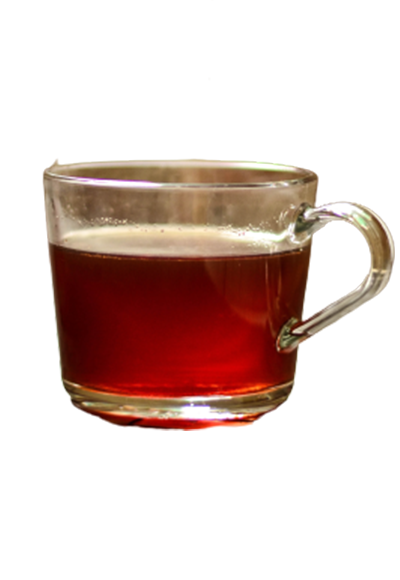

It's not just Tea
It's Lal Cha
From Assam, Sikkim, and West Bengal to all over North-East India, and also in Bangladesh you will find Lal Cha in abundance. This is a simple black tea prepared without milk and less sugar. The Tea Gardens of Assam are famous all over the world.
Learn More
